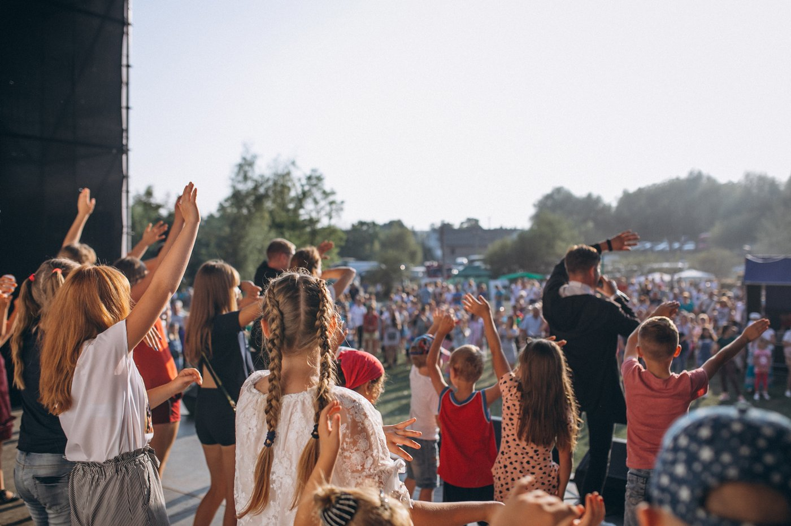
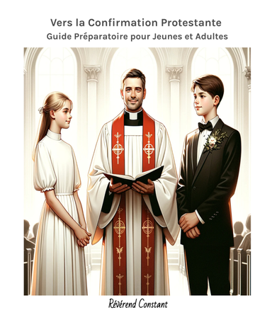

Un ministère itinérant, fidèle aux Écritures.

La Communauté Baptiste de Belgique (CBB) est une communauté baptiste évangélique fondée et dirigée par le Pasteur Constant à Rhode-Saint-Genèse. Notre assemblée transcende les structures traditionnelles : nous considérons que l'Église véritable réside non pas dans les édifices, mais dans la communion des fidèles. Cette perspective nous permet d'offrir un espace accessible à tous, quelle que soit l'étape de votre cheminement spirituel.
Fondée sur des principes d'ouverture, d'accueil et de fidélité à la Parole, notre communauté constitue un lieu où chacun peut explorer sa foi selon son propre rythme. Nous recevons avec bienveillance tous ceux qui recherchent une connexion authentique au Christ.
Confession baptiste évangélique.

Nos convictions s'enracinent dans les fondements du christianisme, en particulier dans la tradition baptiste évangélique. Nous affirmons les principes fondateurs du baptisme protestant : l'autorité souveraine des Écritures (Sola Scriptura), le baptême du croyant sur confession de foi personnelle — et non comme rituel administré aux nourrissons —, le sacerdoce universel de tous les croyants, et l'autonomie de chaque communauté locale sous la conduite de l'Esprit Saint.
Nous valorisons :
- La bienveillance comme fondement de notre foi
- L'accueil de tous, sans distinction d'origine ou de parcours
- Le cheminement spirituel individuel, fidèle à la Bible
- Le service envers autrui comme expression concrète de nos valeurs
Notre approche théologique concilie la fidélité à la tradition baptiste et l'ouverture aux questions contemporaines, offrant à chacun un espace propice à l'épanouissement de sa foi.
Une famille spirituelle.



Notre communauté rassemble des personnes d'horizons divers, unies par leur quête de sens et leur désir d'authenticité. Nous constituons une famille où chacun trouve sa place dans un climat de respect mutuel.
Notre spécificité réside dans la liberté accordée à chaque membre de participer à la vie de notre communauté de foi, que ce soit lors des cérémonies importantes ou des rencontres informelles. En communion fraternelle avec l'AEEBLF, la CBB s'inscrit dans le tissu baptiste francophone européen.
Le Pasteur Constant.

Le Pasteur Constant est en charge de notre communauté. Il adopte une approche rigoureuse de la Bible Louis Segond, fidèle à la tradition baptiste évangélique, tout en encourageant une interprétation adaptée à la vie moderne.
Convaincu que chaque individu a un rôle unique dans le plan divin, il guide ceux qui cherchent une meilleure compréhension de leur chemin spirituel, dans la paix du Christ et pour le salut de leur âme.
Pour découvrir son parcours complet, consultez la page de présentation.
Presbytère de Rhode-Saint-Genèse.


Notre presbytère de Rhode-Saint-Genèse constitue notre lieu d'accueil et de rassemblement. Situé dans un environnement paisible, cet espace fait office de presbytère et de lieu de recueillement pour notre ministère.
Adresse : Octave Michotlaan 1, 1640 Rhode-Saint-Genèse (à 10 minutes de Waterloo)
Ce presbytère accueille (sur rendez-vous) :
- Les préparations de cérémonies
- Les accompagnements spirituels
- Certaines cérémonies et activités
- Les rencontres communautaires
Bien que notre ministère s'étende au-delà de cette enceinte, ce presbytère représente un point d'ancrage pour ceux qui souhaitent une rencontre personnelle ou un moment de réflexion dans un cadre serein.
Nos ouvrages


Vers la Confirmation Protestante : Guide Préparatoire pour Jeunes et Adultes
Disponible sur Amazon →